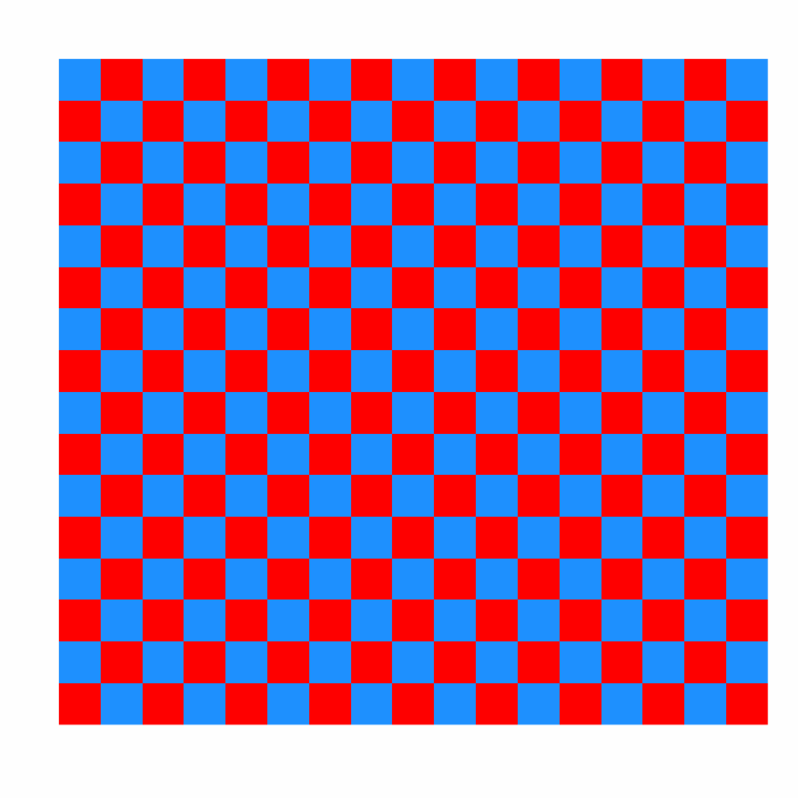

Applies a planar UV mapping to a mesh based on a given direction and set of U/V vectors.
If full_mesh_bbox is true, the UV mapping is scaled based on the bounding box
of the entire mesh. If false, each shape's bounding box is used.
One of direction/u/v must be NULL and will be calculated from the others.
add_plane_uv_mesh(
mesh,
direction = c(0, 1, 0),
u = NULL,
v = NULL,
override_existing = FALSE,
full_mesh_bbox = TRUE
)The mesh to which the UV mapping will be applied.
Default c(0, 1, 0). A vector specifying the direction for
UV mapping. If not specified and u/v are both specified, this will be ignored.
Default NULL. A vector specifying the u direction.
Default NULL. A vector specifying the v direction.
Default FALSE. Specifies whether existing UV
coordinates should be overridden.
Default TRUE. Specifies whether the full mesh's
bounding box is used for UV mapping.
Modified mesh with added UV mapping.
if(run_documentation()) {
#Let's construct a mesh from the volcano dataset
#Build the vertex matrix
vertex_list = list()
counter = 1
for(i in 1:nrow(volcano)) {
for(j in 1:ncol(volcano)) {
vertex_list[[counter]] = matrix(c(j,volcano[i,j]/3,i), ncol=3)
counter = counter + 1
}
}
vertices = do.call(rbind,vertex_list)
#Build the index matrix
index_list = list()
counter = 0
for(i in 1:(nrow(volcano)-1)) {
for(j in 1:(ncol(volcano)-1)) {
index_list[[counter+1]] = matrix(c(counter,counter+ncol(volcano),counter+1,
counter+ncol(volcano),counter+ncol(volcano)+1,counter + 1),
nrow=2, ncol=3, byrow=TRUE)
counter = counter + 1
}
counter = counter + 1
}
indices = do.call("rbind",index_list)
#Create a checkerboard image
create_checkerboard_texture = function(filename, n = 16) {
old_par = par(no.readonly = TRUE)
on.exit(par(old_par))
plot.new()
par(mar = c(0, 0, 0, 0))
checkerboard = matrix(c(1, 0), nrow = n+1, ncol = n)
png(filename, width = 800, height = 800)
image(1:(n+1), 1:n, checkerboard, col = c("dodgerblue", "red"),
axes = FALSE, xlab = "", ylab = "")
dev.off()
}
checkerboard_file = tempfile(fileext = ".png")
create_checkerboard_texture(checkerboard_file)
rayimage::plot_image(checkerboard_file)
}

if(run_documentation()) {
#Construct the mesh
volc_mesh = construct_mesh(vertices = vertices, indices = indices,
material = material_list(type="phong", diffuse="darkred",
ambient = "darkred", ambient_intensity=0.2))
#Set the direction so that the checkerboard will be mapped to the surface like a carpet
uv = add_plane_uv_mesh(volc_mesh, direction=c(0,200,0), u = c(1,0,0))
uv = set_material(uv, texture_location = checkerboard_file,
ambient = "white", ambient_intensity=0.1)
#Rasterize the scene
rasterize_scene(center_mesh(uv), lookfrom=c(200,200,200),fov=0,width=1200,height=1200,
light_info = directional_light(c(0,1,1)) |>
add_light(directional_light(c(1,1,-1))),ortho_dimensions=c(120,120))
}
#> Setting `lookat` to: c(0.00, 0.00, 0.00)
#> Error in match.arg(method): 'arg' should be one of “raw”, “reinhard”, “uncharted”, “hbd”
if(run_documentation()) {
#Set the direction so that the checkerboard will be mapped directly at the camera
uv = add_plane_uv_mesh(volc_mesh, direction=c(200,200,200), v = c(-1,1,-1))
uv = set_material(uv, texture_location = checkerboard_file,
ambient = "white", ambient_intensity=0.1)
#Rasterize the scene
rasterize_scene(center_mesh(uv), lookfrom=c(200,200,200),fov=0,width=1200,height=1200,
light_info = directional_light(c(0,1,1)) |>
add_light(directional_light(c(1,1,-1))), ortho_dimensions=c(120,120))
}
#> Setting `lookat` to: c(0.00, 0.00, 0.00)
#> Error in match.arg(method): 'arg' should be one of “raw”, “reinhard”, “uncharted”, “hbd”